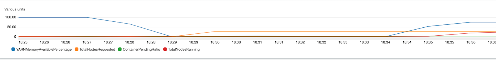

4.1 - Managed Scaling ¶
BP 4.1.1 Keep core nodes constant and scale with only task nodes ¶
Scaling with only task nodes improves the time for nodes to scale in and out because task nodes do not coordinate storage as part of HDFS. During scale up, task nodes do not need to install data node daemons and during scale down, task nodes do not need re balance HDFS blocks. Improvement in the time it takes to scale in and out improves performance and reduces cost. When scaling down with core nodes, you also risk saturating the remaining nodes disk volume during HDFS re balance. If the nodes disk utilization exceeds 90%, it’ll mark the node as unhealthy making it unusable by YARN.
In order to only scale with task nodes, you keep the number of core nodes constant and right size your core node EBS volumes for your HDFS usage. Remember to consider the hdfs replication factor which is configured via dfs.replication in hdfs-site.xml. It is recommended that a minimum, you keep 2 core nodes and set dfs.replication=2.
Below is a managed scaling configuration example where the cluster will scale only on task nodes. In this example, the minimum nodes is 25, maximum 100. Of the 25 minimum, they will be all on-demand and core nodes. When the cluster needs to scale up, the remaining 75 will be task nodes on spot.

BP 4.1.2 Monitor Managed Scaling with Cloudwatch Metrics ¶
You can monitor your managed scaling cluster with CloudWatch metrics. This is useful if you want to better understand how your cluster is resizing to the change in job load/usage.
Lets looks at an example:

At 18:25, “YARNMeoryAvailablePercentage” starts at 100%. This means that no jobs are running. At 18:27 a job starts and we see “YARNMeoryAvailablePercentage” begin to drop, reaching 0% at 18:29. This triggers managed scaling to start a resize request - represented by the increase in the metric “TotalNodesRequested”. After 5-6 mins, at 18:35 the nodes finish provisioning and are considered “RUNNING”. We see an increase in the metric, “TotalNodesRunning”. Around the same time, we see “YARNMeoryAvailablePercentage” begin increasing back to 100%.
For a full list of metrics and description of each, see: https://docs.aws.amazon.com/emr/latest/ManagementGuide/managed-scaling-metrics.html
BP 4.1.3 Consider adjusting YARN decommissioning timeouts depending on your workload ¶
There are two decommissioning timeouts that are important in managed scaling:
yarn.resourcemanager.nodemanager-graceful-decommission-timeout-secs: This is the maximal time to wait for running containers and applications to complete before transition a DECOMMISSIONING node into DECOMMISSIONED spark.blacklist.decommissioning.timeout: This is the maximal time that spark does not schedule new tasks on executors running on that node. Tasks already running are allowed to complete.
When managed scaling triggers a scale down, YARN will put nodes it wants to decomission in a “DECOMMISSIONING” state. Spark will detect this and add these nodes to a “black list”. In this state, Spark will not assign any new tasks to the node and once all tasks are completed, YARN will finish decommissioning the node. If the task runs longer than yarn.resourcemanager.nodemanager-graceful-decommission-timeout-secs, the node is force terminated and task will be re-assigned to another node.
In certain scale down scenarios where you have long running tasks, many nodes can end up in this state where they are “DECOMMISSIONING” and “blacklisted” because of spark.blacklist.decommissioning.timeout. You may observe that new jobs run slower because it cannot assign tasks to all nodes in the cluster.
To mitigate this, you can lower spark.blacklist.decommissioning.timeout to make the node available for other pending containers to continue task processing. This can improve job run times. However, please take the below into consideration:
- If a task is assigned to this node, and YARN transitions from DECOMMISSIONING into DECOMMISSIONED, the task will fail and will need to be reassigned to another node
- Spark blacklist also protects from bad nodes in the cluster -e.g faulty hardware leading to high task failure rate. Lowering the blacklist timeout can increase task failure rate since tasks will continue to assigned to these nodes.
- Nodes can be transitioned from DECOMMISSIONING to RUNNING due to a scale up request. In this scenario, tasks will not fail and with a lower blacklist timeout and pending tasks can continuosuly be assigned to the node
With yarn.resourcemanager.nodemanager-graceful-decommission-timeout-secs, consider increasing this from the default of 1hr to the length of your longest running task. This is to ensure that YARN does not force terminate the node while the task is running and having it to re-run on another node. The cost associated with re-running the long running task is generally higher than keeping the node running to ensure its completed.
For more information, see:
https://docs.aws.amazon.com/emr/latest/ManagementGuide/emr-troubleshoot-error-resource-3.html
https://docs.aws.amazon.com/emr/latest/ReleaseGuide/emr-spark-configure.html#spark-decommissioning
BP 4.1.5 EMR Managed Scaling compared to Custom Automatic Scaling ¶
The following link highlights the key differences between EMR Managed Scaling vs. Custom Automatic Scaling.
https://docs.aws.amazon.com/emr/latest/ManagementGuide/emr-scale-on-demand.html
In general, we recommend using EMR managed Scaling since the metric evaluation is every 5-10 seconds. This means your EMR cluster will adjust quicker to the change in the required cluster resources. In addition, EMR managed Scaling also supports Instance Fleets and the the scaling policy is simpler to configure because EMR managed scaling only requires min and max amounts for purchasing options (On demand/Spot) and Node Type (Core/Task).
Custom Automatic Scaling should be considered if you want autoscaling outside of YARN applications or if you want full control over your scaling policies (e.g evaluation period, cool down, number of nodes)